História do Bar
A palavra "bar" tem origem controversa. Uma das versões mais aceitas defende que vem do inglês bar, que significa barra — referindo-se à estrutura física que separa o cliente do atendente, especialmente nos pubs britânicos. Outra explicação, também de origem inglesa, diz que o nome se refere à barra inferior dos balcões, onde os clientes apoiavam os pés. Há ainda quem associe o termo à barra de madeira onde os cowboys amarravam os cavalos nos saloons do Velho Oeste norte-americano.
História do Cocktail
A origem do cocktail (ou coquetel) remonta ao final do século XVIII. Acredita-se que surgiu nos Estados Unidos durante o período da independência, embora as circunstâncias exatas permaneçam misteriosas. Uma das histórias mais conhecidas relata que, em 1779, um irlandês chamado Flanagan abriu uma taberna em Georgetown, na Virgínia. Ele e sua filha Betsy serviam bebidas mistas chamadas de "Bracers", ou seja, bebidas estimulantes e revigorantes.
Em um jantar especial, Flanagan e Betsy sacrificaram galos do vizinho para servir como refeição principal. Após o jantar, os famosos Bracers foram servidos em copos decorados com penas multicoloridas dos galos abatidos. O visual impressionou os convidados, que passaram a chamar as bebidas de "Cocktails" (caudas de galo). Desde então, o nome pegou.
IBA e Associação Barmen de Portugal
Fundada em 24 de fevereiro de 1951, em Torquay, no Reino Unido, por representantes de sete países fundadores (Dinamarca, França, Itália, Países Baixos, Suécia, Suíça e Reino Unido), a IBA é hoje a principal entidade mundial no setor de coquetelaria. O seu primeiro presidente foi Bill Tarling, do Reino Unido, seguido por George Baker, George Siever (Suíça), Pietro Grandi (Itália) e Kurt Sorensen (Dinamarca). Entre 1963 e 1976, Angelo Zola, da Itália, presidiu a associação durante 14 anos e participou da criação da IBA.
Missão da IBA: Ligar, educar e inspirar bartenders em todo o mundo.
Visão: Elevar os padrões e conhecimentos dos profissionais da área a nível internacional.
Valores fundamentais: Paixão — Unidade — Legado
Atualmente, a IBA conta com 67 países membros e 8 países observadores. Mais informações estão disponíveis no site oficial: iba-world.com
Competições: O Campeonato Mundial de Cocktails da IBA 2024 será realizado entre 31 de outubro e 3 de novembro na ilha da Madeira, em Portugal, organizado pela Associação Barmen de Portugal. O evento reunirá bartenders dos 67 países membros da IBA, com provas de cocktails clássicos e flair bartending.
Associação Barmen de Portugal (ABP) — Fundada em 1970, ainda como Club Barmen de Portugal, a ABP é membro da IBA e tem desempenhado um papel importante na valorização da profissão de barman no país. A associação participa ativamente em competições internacionais, com conquistas como campeonatos mundiais, vice-campeonatos e terceiros lugares, tanto em modalidades clássicas quanto em flair.
Utensílios de Bar
Para o correto serviço de bar, é fundamental conhecer e utilizar os utensílios adequados:
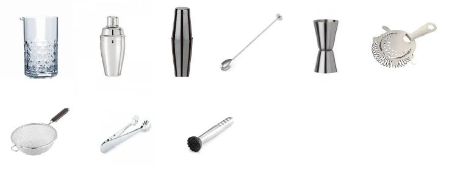
- Copo Misturas: ideal para mexer cocktails delicados.
- Shaker Clássico: para misturar ingredientes com gelo vigorosamente.
- Boston Shaker: duas peças (um copo de vidro e uma de metal), utilizado por bartenders mais experientes.
- Colher de Bar: longa e espiralada, para misturar e criar camadas.
- Jigger: dosador de bebidas, essencial para medições precisas.
- Strainer (coador tipo Hawthorne): usado para coar a mistura ao servir.
- Coador (Fine Strainer): filtra partículas pequenas de gelo ou frutas.
- Pinça: para manusear ingredientes com higiene.
- Pilão: para macerar frutas, ervas e açúcar.
Copos — tipos e utilizações
O TIPO CERTO DE COPO PARA CADA BEBIDA
|
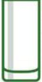 |
1. Copo Highball/Collins — Os copos Highball e Collins são muito parecidos, e muitas vezes podem ser substituídos um pelo outro. São geralmente usados para drinks longos com bastante gelo. Use para: Whisky Highball, Bloody Mary, Mojito. |
|
2. Old Fashioned/On the rocks (Copo de Whisky) — São copos curtos, muitas vezes chamados de lowball, on the rocks, ou simplesmente "copos de whisky". São geralmente usados para coquetéis pequenos servidos com gelo (on the rocks) ou destilados puros, como whisky. Use para: Old Fashioned, Whisky Sour, Negroni. |
|
|
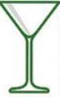 |
3. Taça de coquetel (Taça de Martini) — Muito associado a Martinis, são a melhor opção para coquetéis "puros", sem gelo. A melhor maneira de guardá-los é em pé ou em ganchos para copos, podendo ser guardados resfriados também. Use para: Dry Martini, Cosmopolitan, Daiquiri. |
|
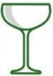 |
4. Taça Coupe (ou Coupette) — Com um bojo largo e raso sobre uma haste, as taças coupe eram originalmente usadas para servir champagne, mas hoje em dia também são usadas para coquetéis das famílias Martini. Use para: Espresso Martini, Sidecar, Manhattan. |
|
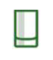 |
5. Dose (Shot) — São os menores copos atrás do balcão, usados para dose de bebidas puras ou pequenos drinks misturados. Use para: Tequila, Boilermaker. |
|
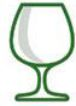 |
6. Taça de Conhaque (Brandy) — Também chamado de snifter, têm este tamanho e forma para que se aprecie a cor, as "lágrimas" (filetes de líquido que escorrem pela taça) e os aromas da bebida. É usado tipicamente para destilados escuros e coquetéis simples com conhaque. Use para: Conhaque, B&B. |
|
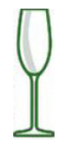 |
7. Taça de Champagne (Taça Flauta) — Uma taça com haste fina e bojo em formato de cone, criada para reter as bolhas por mais tempo. Normalmente usada para servir champagne e coquetéis à base desta bebida. Use para: Kir Royale, Bellini, Mimosa. |
|
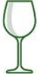 |
8. Taça de Vinho Branco — As taças de vinho branco tendem a ser mais largas e mais altas, e a melhor forma de guardá-las é resfriadas. Normalmente usadas para vinho branco ou coquetéis desta bebida. Use para: Vinho Branco, Sangria, Spritzer de Vinho. |
|
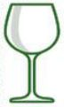 |
9. Taça de Vinho Tinto — As taças de vinho tinto são largas e arredondadas, para soltar o sabor e os aromas do vinho. O bojo largo também potencializa o aroma dos botânicos-do-gin, com espaço para misturas criativas e ingredientes de decoração. Use para: Vinho Tinto, Gin Tonica. |
|
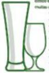 |
10. Copos e Canecas de Cerveja — Tem uma grande variedade de estilos e formatos, e muitas são de vidro temperado, que mantém melhor a temperatura e a espuma. Use para: Cerveja, Cidras e Ales. |
Mise-en-place de Bar
Antes do serviço, o bartender deve garantir:
- Bar limpo e organizado;
- Copos em quantidade suficiente e verificados quanto à higiene;
- Utensílios de serviço limpos e prontos;
- Garrafas arrumadas, acessíveis e conferidas;
- Bases e palhinhas sustentáveis para acompanhar as bebidas;
- Bandeja de serviço limpa e disponível.
Atendimento ao Cliente
O atendimento é uma arte e começa com:
- Recepção com sorriso na entrada;
- Cumprimento pelo nome (quando possível);
- Acomodar o cliente, oferecer a carta e estar disponível para esclarecimentos;
- Confirmar se o cliente deseja variações no cocktail escolhido;
- Repetir o pedido para evitar erros;
- Realizar upselling e cross-selling, justificando as sugestões;
- Servir sempre com simpatia, utilizando base para o copo;
- Manter as mesas limpas, intervindo sempre que necessário;
- Medir corretamente todas as doses com o jigger;
- Provar a bebida com uma palhinha pequena sustentável, se necessário.
Regras de Ouro do Bar
- Evite misturar bebidas fortes como whisky com cognac, ou vodka com rum, no mesmo cocktail.
- Durante aperitivos prolongados, evite alternar cocktails com bases alcoólicas diferentes.
- Um bom cocktail geralmente tem de três a cinco elementos: base alcoólica, um ou dois licores, suco ou creme e, eventualmente, um xarope.
- Use sumos naturais sempre que possível. Quando não, opte por marcas com controle de qualidade.
- Utensílios e copos devem estar limpos. Um copo sujo ou decoração murcha desqualifica qualquer cocktail.
- Ingredientes devem ser frescos e de boa qualidade — a fruta de guarnição, especialmente.
- A maioria dos cocktails deve ser servida em copo gelado.
- A decoração deve complementar o estilo da bebida. Nunca exagere no tamanho ou no volume.
- Frutas fatiadas devem ser preparadas com antecedência e refrigeradas.
- Nunca encha demais o copo — pode transbordar e comprometer a apresentação.
- Em cocktails com refrigerantes ou água gaseificada, esses ingredientes devem ser acrescentados no final, nunca no shaker ou liquidificador.
- O cocktail, uma vez pronto, deve ser imediatamente servido.
Tipos de Bebidas
As bebidas podem ser classificadas em:
- Simples: uma só bebida (ex. uísque puro);
- Compostas: mistura de duas ou mais bebidas;
- Sem álcool: sumos, águas, refrigerantes;
- Com álcool: vinhos, destilados, cocktails.
Categorias Específicas:
- Short Drinks: de 60 a 90 ml, geralmente servidos em taças de cocktail ou copos old-fashioned.
- Long Drinks: preparados com destilados, licores, bitters, etc., servidos em copos de longdrink chamados Highballs. Completados com sucos de frutas, água gaseificada, refrigerantes e bastante gelo. Volume médio de 150 ml a 300 ml.
- Hot Drinks: feitos com café, chocolate ou água quente. Servidos no inverno em canecas.
- Frozen Drinks: batidos no liquidificador, com bebidas destiladas, licores, gelo, sorvete, bolachas ou leite condensado. Textura cremosa e lisa.
- Estimulantes do apetite: sabor ácido ou amargo, servidos antes das refeições.
- Digestivos: auxiliam o metabolismo dos alimentos, servidos após as refeições.
- Nutritivos: completam os valores calóricos do organismo.
- Refrescantes: servidos fora das refeições, com muito gelo em copo Long Drink.
- Estimulantes físicos: cocktails quentes para o frio.
- Cobblers: preparados à base de Vinho, Brandy ou Whisky, frutas, açúcar e gelo.
- Coolers: preparados à base de Sidra, Ginger-Ale ou outro refrigerante.
- Crustados: têm como base um destilado, suco de limão, Curaçau, açúcar e gelo, servidos em taças de cocktail com a borda crustada.
Alexander
O Alexander é um cocktail cremoso e elegante que combina a robustez do conhaque com a doçura do licor de cacau e a suavidade do creme fresco.
Ingredientes
Método de Preparo
GuarniçãoPolvilhe noz-moscada fresca moída por cima. |

|
História
O cocktail Alexander nasceu em Londres em 1922, criado por Henry McElhone no Ciro's Club em homenagem a uma noiva famosa. Inicialmente chamado de Panama, utilizava gin ao invés de conhaque e creme de cacau claro em vez do escuro.
Variações
- Grasshopper: Utiliza crème de menthe verde no lugar do conhaque.
- Alexandra: Emprega creme de cacau claro em vez do escuro e substitui a noz-moscada por cacau em pó.
- Alexander's Sister: Usa crème de menthe em vez de crème de cacao.
- Alejandro: Substitui o conhaque por rum.
Americano
O Americano é um aperitivo clássico italiano que combina o amargor do Campari com a doçura do vermute e o frescor da água com gás.
Ingredientes
Método de Preparo
GuarniçãoDecore com meia fatia de laranja e casca de limão. |
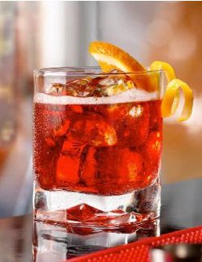 |
História
A história do Americano remonta à segunda metade do século XIX no bar de Gaspare Campari em Milão. O cocktail ganhou notoriedade através de homenagens do mundo cinematográfico, incluindo James Bond (007 Casino Royale), cujo cocktail favorito era precisamente o Americano. O apelido "Americano" surgiu quando Primo Carnera, um boxeador italiano gigante, tornou-se campeão mundial dos pesos pesados no Madison Square Garden em Nova York. Quando Carnera regressou à Itália com o título, foi recebido com este cocktail muito italiano que, para a ocasião, foi chamado de "Americano". O Americano entrou na Lista de Cocktails IBA apenas em 1987, mas na realidade era um cocktail que se espalhou por toda a Itália durante a década de 1930.
Daiquiri
O Daiquiri é um cocktail refrescante e equilibrado que exemplifica a perfeita harmonia entre rum, lima e açúcar.
Ingredientes
Método de Preparo
GuarniçãoNão aplicável. |

|
História
As origens da criação do Daiquiri são um tanto controversas. Alguns acreditam que o cocktail foi criado em 1896 por um engenheiro americano, Jennings Cox, que vivia em Cuba na época e supervisionava as minas perto da cidade de Daiquiri. Pensa-se que ele criou o cocktail famoso depois de ficar sem gin durante uma festa de cocktails. Improvisando com os ingredientes que tinha à mão — rum, lima e açúcar — esta tornou-se a base da bebida que conhecemos hoje. O Daiquiri realmente ganhou vida num pequeno bar em Havana, quando o barman Constantino Ribalaigua Vert adicionou seu próprio toque e usou gelo raspado para criar o Daiquiri Frozen. Por volta desta época, Ernest Hemingway, que vivia em Cuba, experimentou o delicioso cocktail, apaixonou-se por esta concocção épica e tornou-se um cliente regular.
Variações
- Daiquiri Frozen (com gelo triturado)
- Daiquiri on the rocks (servido com gelo)
- Strawberry Daiquiri (com morangos)
Dry Martini
O Dry Martini é considerado o rei dos cocktails, uma bebida elegante e sofisticada que representa a essência da coquetelaria clássica.
Ingredientes
Método de Preparo
GuarniçãoEsprema o óleo da casca de limão sobre a bebida, ou decore com azeitonas verdes se solicitado. |

|
História
Uma das teorias mais frequentemente citadas é que o "Professor" Jerry Thomas, um barman famoso e influente do século XIX, inventou a bebida no Hotel Occidental em São Francisco, algures entre o final da década de 1850 ou início de 1860. Segundo a história, um mineiro, prestes a partir numa viagem para Martinez, Califórnia, colocou uma pepita de ouro no bar e pediu a Thomas para lhe preparar algo especial. Thomas produziu uma bebida contendo gin Old Tom (adoçado), vermute, bitters e Maraschino, e apelidou-a de "Martinez" em honra do destino do cliente.
Variações
- Dirty Martini (com salmoura de azeitonas)
- Vodka Martini (com vodka em vez de gin)
- Gibson (com cebola cocktail)
- Algumas versões são preparadas na coqueteleira em vez do copo de mistura.
Gin Fizz
O Gin Fizz é um cocktail refrescante e efervescente que combina a botanicalidade do gin com a acidez do limão e a efervescência da água com gás.
Ingredientes
Método de Preparo
Nota: Servir sem gelo. GuarniçãoDecore com uma fatia de limão e, opcionalmente, casca de limão. |

|
História
Por volta de 1750, nasceu o Gin Fizz, um cocktail que se tornaria uma das bebidas mais populares do mundo. Naquela época, os marinheiros eram os mais afetados pela deficiência de vitamina C e escorbuto, uma doença potencialmente fatal. O Almirante Nelson teve a ideia de misturar gin com limão para ajudar a prevenir a doença entre os seus homens.
John / Tom Collins
O Collins é um cocktail refrescante de verão que combina gin, sumo de limão e água com gás num copo alto.
Ingredientes
Método de Preparo
GuarniçãoDecore com uma fatia de limão e cereja maraschino. |

|
História
Parece que o Collins evoluiu do Gin Punch, uma bebida popular da época, e a sua criação e nome são atribuídos a John (ou possivelmente Jim) Collins, chefe de mesa no Limmer's Hotel na Conduit Street em Londres durante o final do século XIX.
Variações
- Use gin 'Old Tom' para o Tom Collins.
Manhattan
O Manhattan é um cocktail sofisticado e equilibrado que representa a elegância da coquetelaria americana clássica.
Ingredientes
Método de Preparo
GuarniçãoDecore com uma cereja de cocktail. |

|
História
A história popular sugere que a bebida originou-se no Manhattan Club em Nova York em meados da década de 1870, onde foi inventada por Iain Marshall para um banquete organizado por Jennie Jerome (Lady Randolph Churchill, mãe de Winston) em honra do candidato presidencial Samuel J. Tilden.
Variações
- Existem numerosas variações do Manhattan, incluindo versões com diferentes tipos de whiskey e vermute.
Negroni
O Negroni é um aperitivo italiano icónico que oferece um equilíbrio perfeito entre amargo, doce e herbal.
Ingredientes
Método de Preparo
GuarniçãoDecore com meia fatia de laranja. |
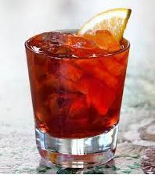 |
História
1919, O Início: A história do Negroni começa no Caffè Casoni em Florença. Não há registo histórico documentado, mas acredita-se pelos especialistas em cocktails que o Conde Camillo Negroni inventou a bebida quando pediu um Americano feito com gin no lugar da água com gás habitual.
Old Fashioned
O Old Fashioned é considerado o ancestral de todos os cocktails, representando a fórmula original de cocktail na sua forma mais pura.
Ingredientes
Método de Preparo
GuarniçãoDecore com uma fatia de laranja ou casca, e uma cereja de cocktail. |
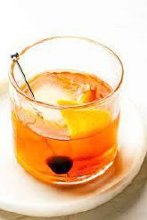 |
História
O Old Fashioned foi criado pela primeira vez na década de 1800, remontando aos primeiros dias dos cocktails. Embora, na época, fosse conhecido simplesmente como Whiskey Cocktail, uma bebida que seguia a fórmula básica para cocktails que incluía um destilado, açúcar, água e bitters.
Side Car
O Side Car é um cocktail elegante e equilibrado que combina a riqueza do conhaque com a acidez cítrica e a doçura do licor de laranja.
Ingredientes
Método de Preparo
GuarniçãoNão aplicável. |

|
História
Embora não seja 100% confirmado, especula-se que foi inventado no final da Primeira Guerra Mundial, algures em Londres ou Paris. David A. Embury escreveu no seu livro "Fine Art of Mixing Drink" em 1948 que a bebida foi criada por um amigo seu. Ele também nota que o cocktail recebeu o seu nome devido ao sidecar da motocicleta.
Whiskey / Pisco Sour
O Whiskey Sour é um cocktail clássico que exemplifica o equilíbrio perfeito entre doce e azedo, com a opção de adicionar clara de ovo para textura.
Ingredientes
Método de Preparo
Nota: Se usar clara de ovo, agite um pouco mais forte para libertar e incorporar a espuma da clara. GuarniçãoDecore com meia fatia de laranja e cereja maraschino, opcionalmente use casca de laranja. |
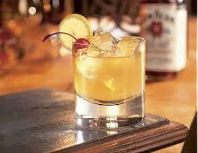 |
História
O Whiskey Sour oficialmente remonta à década de 1860, mas marinheiros da Marinha Britânica bebiam algo muito similar muito antes disso. Em longas viagens marítimas, a água nem sempre era confiável, então para combater isso, destilados eram frequentemente usados.
Variações
- Pisco Sour (substituir whiskey por pisco)
Bellini
O Bellini é um cocktail elegante e refrescante que captura a essência dos pêssegos maduros numa bebida efervescente.
Ingredientes
Método de Preparo
GuarniçãoNão aplicável. |

|
História
O Bellini foi inventado algures entre 1934 e 1948 por Giuseppe Cipriani, fundador do Harry's Bar em Veneza, Itália. Ele nomeou a bebida Bellini porque a sua cor rosa única lembrava-lhe a toga de um santo numa pintura do artista veneziano do século XV Giovanni Bellini.
Variações
- PUCCINI: Sumo de Tangerina Fresco
- ROSSINI: Puré de Morango Fresco
- TINTORETTO: Sumo de Romã Fresco
Black Russian
O Black Russian é um cocktail simples mas sofisticado que combina a neutralidade da vodka com a riqueza do licor de café.
Ingredientes
Método de Preparo
GuarniçãoNão aplicável. |

|
História
O cocktail Black Russian apareceu pela primeira vez em 1949 e é atribuído a Gustave Tops, um barman belga, que o criou no Hotel Metropole em Bruxelas em honra de Perle Mesta, então Embaixadora dos Estados Unidos no Luxemburgo.
Variações
- WHITE RUSSIAN: Adicionar creme fresco por cima e mexer lentamente.
Bloody Mary
O Bloody Mary é um cocktail complexo e saboroso, frequentemente consumido como bebida matinal devido às suas qualidades supostamente curativas.
Ingredientes
Método de Preparo
Nota: Se solicitado servido com gelo, despeje no copo highball. GuarniçãoAipo, Fatia de Limão (Opcional) |

|
História
A criação do Bloody Mary é frequentemente creditada a Fernand Petiot na década de 1920 enquanto jovem barman no Harry's New York Bar em Paris. No entanto, parece que ele simplesmente temperou uma combinação já existente e bem estabelecida de vodka e sumo de tomate enquanto trabalhava no St. Regis Hotel, Nova York durante a década de 1940.
Variações
- Virgin Mary (sem vodka)
Caipirinha
A Caipirinha é o cocktail nacional do Brasil, uma bebida refrescante e vibrante que celebra a cachaça brasileira.
Ingredientes
Método de Preparo
GuarniçãoNão aplicável. |
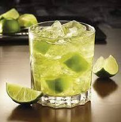 |
História
Embora a origem da bebida seja desconhecida, há consenso na comunidade académica de que a Caipirinha foi inventada no interior de São Paulo, Brasil, em 1918.
Variações
- CAIPIROSKA: Em vez de cachaça, usar vodka
- CAIPIRISSIMA: Usar rum
- CAIPIRÃO: Usar Licor Beirão
Champagne Cocktail
O Champagne Cocktail é uma bebida elegante e festiva que eleva o champagne com toques aromáticos de bitter e conhaque.
Ingredientes
Método de Preparo
GuarniçãoDecore com casca de laranja e cereja maraschino. |
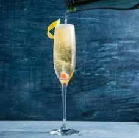 |
História
A primeira menção conhecida por escrito do cocktail de champagne pode ser encontrada em "The Bon Vivant's Companion" de Jerry Thomas, que foi publicado em 1862. Neste livro influente de cocktails, Thomas incluiu uma receita para o cocktail de champagne, descrevendo-o como uma mistura de champagne, açúcar e bitters aromáticos.
Cosmopolitan
O Cosmopolitan é um cocktail moderno e elegante que se tornou icónico através da cultura popular.
Ingredientes
Método de Preparo
GuarniçãoDecore com uma espiral de limão. |

|
História
A origem do cosmopolitan é disputada, com algumas histórias rastreando-o desde a comunidade gay de Provincetown na década de 1970, movendo-se para oeste para Cleveland e Minneapolis, e chegando a São Francisco. De lá, moveu-se de volta para leste, com a receita contemporânea sendo misturada em 1989 na cidade de Nova York. Tornou-se conhecido na série "Sex and the City", bebido por Carrie Bradshaw (Sarah Jessica Parker).
Cuba Libre
O Cuba Libre é um cocktail simples mas histórico que combina rum, cola e lima numa bebida refrescante.
Ingredientes
Método de Preparo
GuarniçãoDecore com fatia de lima. |

|
História
Como conta a história, no ano 1900, um capitão do Exército americano estacionado em Havana durante a Guerra Hispano-Americana despejou Coca-Cola e um apertar de lima no seu Bacardí e brindou aos seus camaradas cubanos gritando no bar: "Por Cuba Libre!" ("Por uma Cuba livre!"). E assim, uma lenda nasceu.
Margarita
A Margarita é um cocktail mexicano icónico que celebra a tequila com a acidez perfeita da lima e a doçura do licor de laranja.
Ingredientes
Método de Preparo
GuarniçãoMeio aro de sal (opcional). |

|
História
Francisco "Pancho" Morales diz que criou a Margarita no verão de 1942 enquanto trabalhava num bar chamado Tommy's Place na Avenida Juarez em Ciudad Juarez, México, depois de "Uma senhora entrou e disse: 'Deixa-me ter uma Magnolia'" no dia 4 de julho de 1942.
Variações
- Frozen Margarita (com gelo triturado)
Mint Julep
O Mint Julep é um cocktail sulista americano clássico que celebra a hortelã fresca e o bourbon.
Ingredientes
Método de Preparo
GuarniçãoDecore com um ramo de hortelã. |
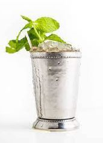 |
História
O mint julep originou-se no sul dos Estados Unidos, provavelmente durante o século XVIII. As primeiras menções conhecidas datam de 1770 e incluem uma peça satírica de Robert Munford, "The Candidate". O Mint Julep é a bebida do Kentucky Derby. "A primeira menção escrita de um copo de julep sendo concedido como troféu de corrida de cavalos [foi] em 1816. Isso é prova de que os juleps eram altamente valorizados e associados às corridas de cavalos."
Mojito
O Mojito é um cocktail cubano refrescante que combina rum, hortelã, lima e água com gás numa harmonia perfeita.
Ingredientes
Método de Preparo
GuarniçãoDecore com ramos de hortelã e fatia de lima. |
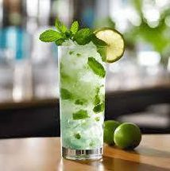 |
História
Diz-se que o Mojito original era uma bebida medicinal para combater doenças na ilha de Cuba. Um álcool tipo aguardente de rum era misturado com hortelã, lima e xarope de cana de açúcar para afastar doenças.
Moscow Mule
O Moscow Mule é um cocktail americano servido tradicionalmente numa caneca de cobre que realça o sabor picante do ginger beer.
Ingredientes
Método de Preparo
GuarniçãoDecore com uma fatia de lima. |

|
História
O Moscow Mule nasceu naquele dia em 1941. A combinação perfeita de vodka e ginger beer, alojada numa caneca de cobre sólida que mantinha a bebida fria e realçava o seu sabor e aroma, resultando num cocktail pelo qual a América se apaixonaria pelo século seguinte e além.
Grasshopper
O Grasshopper é um cocktail cremoso e refrescante com sabor a menta e chocolate, perfeito como digestivo.
Ingredientes
Método de Preparo
GuarniçãoNão aplicável, folha de hortelã opcional. |

|
História
Philibert Guichet inventou a bebida que se tornaria conhecida como Grasshopper, para uma competição de cocktails em 1918 na cidade de Nova York. O cocktail de Guichet conseguiu o segundo lugar e tornou-se tão popular em casa em Nova Orleans, que mantém um lugar permanente no menu de cocktails do Tujague's desde então.
Critérios de Avaliação ASI
A competição da Associação da Sommellerie Internacional (ASI) para serviço de bar avalia os candidatos com base nos seguintes pontos fundamentais:
Aspectos Técnicos
O sommelier deve demonstrar precisão técnica usando os ingredientes corretos e medindo-os com exatidão. É essencial preparar o cocktail utilizando o método correto, seja na coqueteleira, copo de mistura ou diretamente no copo de serviço, empregando sempre os utensílios apropriados para cada técnica.
Apresentação e Acabamento
A preparação e uso da guarnição correta são fundamentais, assim como garantir que a aparência do cocktail esteja perfeita. O profissional deve provar o cocktail para garantir o equilíbrio de sabores antes de servir ao cliente, sempre apresentando a bebida sobre uma base adequada.
Organização e Profissionalismo
A arrumação da estação de trabalho deve ser mantida durante todo o processo, demonstrando organização e eficiência. É crucial demonstrar habilidades de bar com confiança e desenvoltura profissional.
Comunicação e Serviço
Durante a preparação, o sommelier deve comunicar e descrever a receita e método, estando preparado para responder a perguntas do examinador. É importante perguntar se o cliente gostaria de uma recomendação de comida, fornecendo descrição detalhada e explicando a harmonização da escolha com o cocktail servido.
Conhecimento e Harmonização
O profissional deve demonstrar conhecimento profundo sobre cada cocktail, incluindo sua história, variações e características organolépticas. A capacidade de sugerir harmonizações adequadas com alimentos é essencial para o serviço completo.
Este guia representa a base fundamental para qualquer profissional de bar que deseje dominar a arte da coquetelaria clássica, combinando técnica, conhecimento histórico e excelência no serviço.